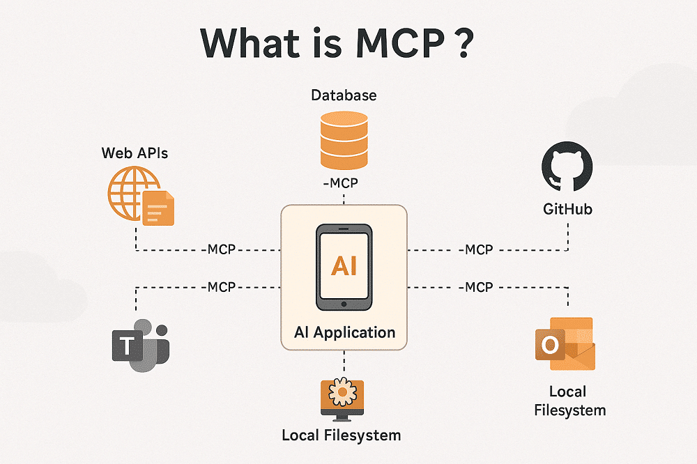
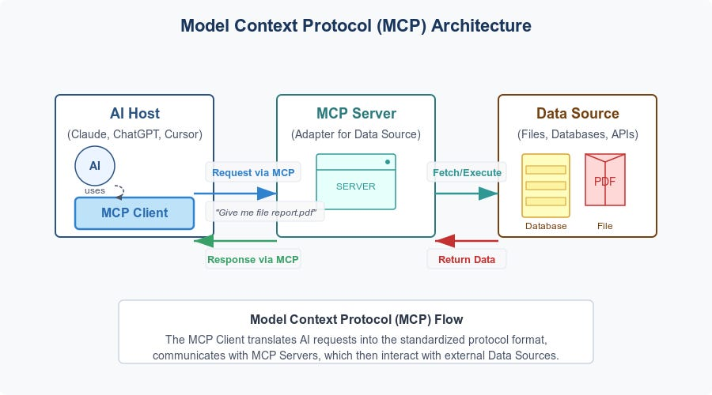
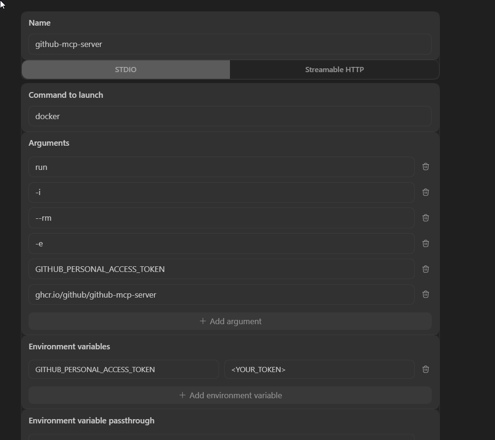
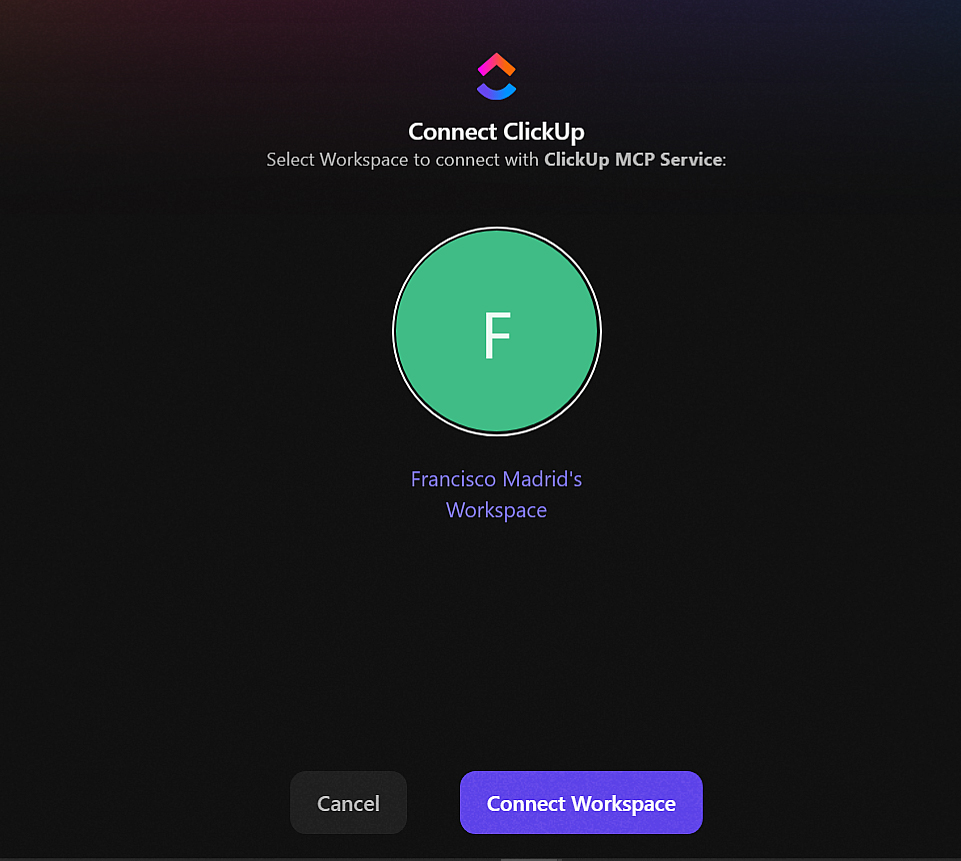

MCP (Model Context Protocol)¶
El Model Context Protocol (MCP) es el estándar de comunicación que permite a los modelos de IA interactuar con el mundo real. Actúa como un puente entre la lógica del LLM y herramientas externas: bases de datos, APIs, navegadores, servicios de diseño, gestores de proyectos, etc.

Note
Para ver la configuración MCP específica de cada agente (Gemini CLI, Claude Code, Cursor, etc.), consulta su archivo dedicado en ../tools/. Esta guía cubre el concepto general, buenas prácticas y las configuraciones de los MCP más utilizados.
1. Arquitectura y Componentes¶
Tools, Resources y Prompts¶
Un servidor MCP expone tres tipos de recursos al modelo:
| Componente | Descripción |
|---|---|
| Tools | Funciones que el modelo puede "llamar" (ej. get_pull_request, list_tasks) |
| Resources | Datos estáticos o dinámicos que el modelo puede leer (ej. logs en tiempo real) |
| Prompts | Instrucciones predefinidas que se pueden invocar como slash commands |
Transportes y Protocolos¶
Define cómo se comunican el cliente (IDE) e el servidor:
| Transporte | Cuándo usarlo |
|---|---|
stdio |
Proceso local. Más simple, sin red. Recomendado para desarrollo. |
SSE |
HTTP con streaming. Para servers remotos o en Docker. |
Streamable HTTP |
Variante moderna de SSE. Preferida en producción. |

2. Archivos de Configuración por Agente¶
Rutas de Configuración (Windows)¶
Antigravity -> C:\Users\<USER>\.gemini\antigravity\mcp_config.json
Gemini CLI -> C:\Users\<USER>\.gemini\settings.json
Codex CLI -> C:\Users\<USER>\.codex\config.toml
Cursor -> <project>\.cursor\mcp.json | ~/.cursor/mcp.json (global)
Claude Code -> <project>\.mcp.json | ~/.claude.json (global)
Tip
Si el OAuth de Antigravity se corrompe en algún MCP, se puede resetear eliminando los archivos de ~/.mcp-auth.
3. Buenas Prácticas¶
Principio de Menor Privilegio¶
Desactiva tools innecesarias para ahorrar tokens y mejorar la precisión del modelo.
Patrones de Exclusión por Agente¶
Activa únicamente las tools que realmente vas a usar. Revisa la documentación de cada MCP y construye una lista de exclusiones.
Ejemplo: Configuración JSON (Exclusiones)¶
{
"mcpServers": {
"mi-servidor": {
"command": "...",
"args": ["..."],
"disabledTools": ["tool_peligrosa", "otra_tool"]
}
}
}
Ejemplo: Configuración Codex CLI (TOML)¶
Docker: Persistencia vs Eficiencia¶
Levantar un servidor con docker run en cada IDE consume recursos excesivos. La mejor práctica es usar un contenedor persistente y conectar los IDEs vía exec -i.
Ejemplo: Configuración Shared Container¶
Warning
Si usas docker run (con --rm) en cada IDE, cada ventana levanta su propio contenedor. Siempre que puedas, usa el patrón exec -i con un contenedor con nombre compartido.
4. Colección de MCPs¶
4.1 MCPs Oficiales¶
Servidores publicados y mantenidos por los proveedores oficiales.
GitHub MCP¶
Permite operar sobre repositorios, pull requests e issues. Requiere un GITHUB_PERSONAL_ACCESS_TOKEN.
Requisito: Variable de entorno GITHUB_PERSONAL_ACCESS_TOKEN configurada en el sistema.
Configuración recomendada — contenedor único compartido:
# Run once — the container stays alive with --restart unless-stopped
docker run -d -i --name github-mcp --restart unless-stopped \
-e GITHUB_PERSONAL_ACCESS_TOKEN \
ghcr.io/github/github-mcp-server:v0.30.3 stdio
Ejemplo: Configuración GitHub (JSON)¶
{
"mcpServers": {
"github-mcp-server": {
"command": "docker",
"args": ["exec", "-i", "github-mcp", "/server/github-mcp-server", "stdio"],
"disabledTools": ["sub_issue_write", "delete_file"]
}
}
}
Configuración para Codex CLI (config.toml):
[mcp_servers.github-mcp-server]
command = "docker"
args = ["exec", "-i", "github-mcp", "/server/github-mcp-server", "stdio"]
enabled = true
[mcp_servers.github-mcp-server.env]
GITHUB_PERSONAL_ACCESS_TOKEN = "<YOUR_TOKEN>"

Tip
Si no tienes Docker, usa docker run -i --rm en lugar de exec -i. Recuerda que eso levanta un contenedor nuevo por cada IDE abierto.
ClickUp MCP (Oficial)¶
Servidor oficial para gestionar tareas y documentos. Usa autenticación OAuth.
Servidor MCP oficial de ClickUp. La autenticación es por OAuth — al configurarlo, el agente abrirá una ventana del navegador para autorizar el acceso.
Warning
Si el agente no responde correctamente después de activar ClickUp MCP, deshabilita la tool clickup_get_workspace_hierarchy. Esta tool descarga la jerarquía completa del workspace y puede saturar la ventana de contexto.
Configuración recomendada:
Ejemplo: Configuración ClickUp (JSON)¶
{
"mcpServers": {
"clickup": {
"command": "npx",
"args": ["-y", "mcp-remote", "https://mcp.clickup.com/mcp"],
"disabledTools": ["clickup_get_workspace_hierarchy"]
}
}
}
Autenticación en Gemini CLI:

Configuración para Codex CLI (config.toml):
Figma MCP (Oficial)¶
Permite leer estilos, colores y componentes de archivos Figma. Requiere Dev Mode y OAuth.
Servidor MCP oficial de Figma. Permite al agente leer estilos, colores, tipografías y componentes de un archivo. La autenticación es por OAuth.
Warning
Antigravity solo soporta el MCP oficial de Figma a través del Dev Mode, que requiere una cuenta de pago (Pro o superior).
Instalación en Gemini CLI (via Extension):
4.2 MCPs de Terceros (Community)¶
Servidores mantenidos por la comunidad que cubren casos no oficiales.
Figma Console MCP¶
Alternativa comunitaria que se comunica con Figma Desktop sin depender de cuenta Pro.
Repositorio: github.com/southleft/figma-console-mcp
Alternativa community al MCP oficial de Figma. Se comunica con Figma Desktop a través de un plugin local, sin depender de servidor remoto ni de cuenta Pro.
Note
Requiere la aplicación desktop de Figma instalada y activa. Ejecuta el siguiente comando para obtener la ruta del manifest del plugin: npx figma-console-mcp@latest --print-path
Configuración con Access Token:
Ejemplo: Configuración Figma Console (JSON)¶
{
"mcpServers": {
"figma-console": {
"command": "npx",
"args": ["-y", "figma-console-mcp@1.22.1"],
"env": {
"FIGMA_ACCESS_TOKEN": "figd_TOKEN",
"ENABLE_MCP_APPS": "true"
}
}
}
}
Para usar la version mas reciente:
figma-console-mcp@latest
White List¶
// gemini-cli
"includeTools": [
"figma_add_component_property",
"figma_add_mode",
"figma_analyze_component_set",
"figma_arrange_component_set",
"figma_audit_component_accessibility",
"figma_batch_create_variables",
"figma_batch_update_variables",
"figma_capture_screenshot",
"figma_clone_node",
"figma_create_child",
"figma_create_variable",
"figma_create_variable_collection",
"figma_delete_component_property",
"figma_delete_node",
"figma_delete_variable",
"figma_delete_variable_collection",
"figma_edit_component_property",
"figma_execute",
"figma_generate_component_doc",
"figma_get_annotation_categories",
"figma_get_annotations",
"figma_get_component",
"figma_get_component_details",
"figma_get_component_for_development",
"figma_get_component_for_development_deep",
"figma_get_component_image",
"figma_get_design_changes",
"figma_get_design_system_kit",
"figma_get_design_system_summary",
"figma_get_file_data",
"figma_get_file_for_plugin",
"figma_get_library_components",
"figma_get_selection",
"figma_get_status",
"figma_get_styles",
"figma_get_text_styles",
"figma_get_token_values",
"figma_get_variables",
"figma_instantiate_component",
"figma_lint_design",
"figma_list_open_files",
"figma_move_node",
"figma_navigate",
"figma_reconnect",
"figma_reload_plugin",
"figma_rename_mode",
"figma_rename_node",
"figma_rename_variable",
"figma_resize_node",
"figma_search_components",
"figma_set_annotations",
"figma_set_description",
"figma_set_fills",
"figma_set_image_fill",
"figma_set_instance_properties",
"figma_set_strokes",
"figma_set_text",
"figma_setup_design_tokens",
"figma_take_screenshot",
"figma_update_variable"
]
Black List¶
Lista de tools que no son para Developers, ni Designers.
// gemini-cli
"excludeTools": [
"figjam_auto_arrange",
"figjam_create_code_block",
"figjam_create_connector",
"figjam_create_section",
"figjam_create_shape_with_text",
"figjam_create_stickies",
"figjam_create_sticky",
"figjam_create_table",
"figjam_get_board_contents",
"figjam_get_connections",
"figma_add_shape_to_slide",
"figma_add_text_to_slide",
"figma_check_design_parity",
"figma_clear_console",
"figma_create_slide",
"figma_delete_comment",
"figma_delete_slide",
"figma_duplicate_slide",
"figma_focus_slide",
"figma_get_comments",
"figma_get_console_logs",
"figma_get_focused_slide",
"figma_get_slide_content",
"figma_get_slide_grid",
"figma_get_slide_transition",
"figma_list_slides",
"figma_post_comment",
"figma_reorder_slides",
"figma_scan_code_accessibility",
"figma_set_slide_background",
"figma_set_slide_transition",
"figma_set_slides_view_mode",
"figma_skip_slide",
"figma_watch_console"
]
Trello MCP¶
Gestión de tableros y tarjetas. Requiere TRELLO_API_KEY y TRELLO_TOKEN.
Repositorio: npmjs.com/package/mcp-server-trello
Permite al agente leer y gestionar tableros, listas y tarjetas de Trello.
Requisitos: Variables de entorno TRELLO_API_KEY y TRELLO_TOKEN.
Generarlas en: trello.com/power-ups/admin
Configuración (variables de entorno del sistema):
Configuración (variables en el archivo de config):
{
"mcpServers": {
"trello": {
"command": "npx",
"args": ["-y", "mcp-server-trello"],
"env": {
"TRELLO_API_KEY": "<TRELLO_API_KEY>",
"TRELLO_TOKEN": "<TRELLO_TOKEN>"
}
}
}
}
5. Recursos Adicionales¶
Directorios y Hubs¶
Recursos para descubrir y configurar nuevos servidores MCP.
| Recurso | Descripción |
|---|---|
| hub.docker.com/u/mcp | Imágenes Docker oficiales de los MCPs más populares. |
| mcp.so | Directorio comunitario de servidores MCP. |
| geminicli.com/extensions | Extensiones y MCPs específicos para Gemini CLI. |
| cursor.directory | Marketplace de reglas, skills y MCPs para Cursor. |